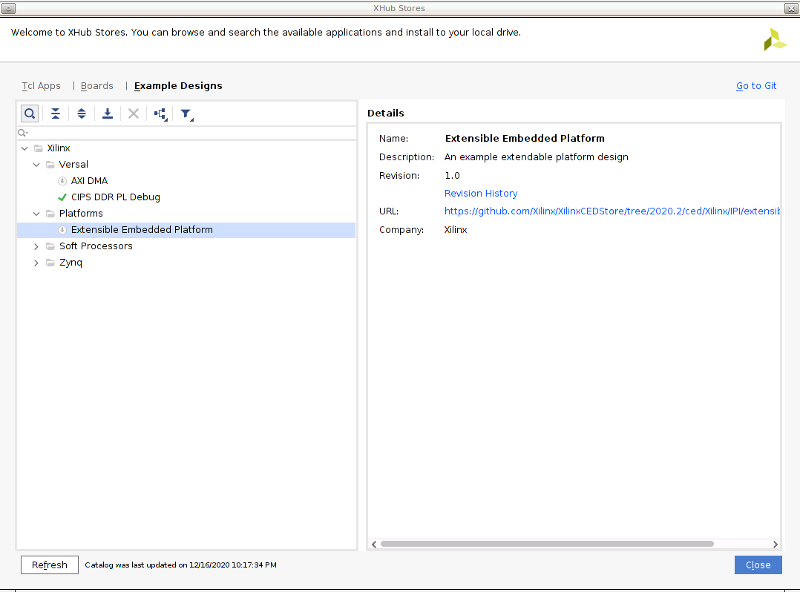
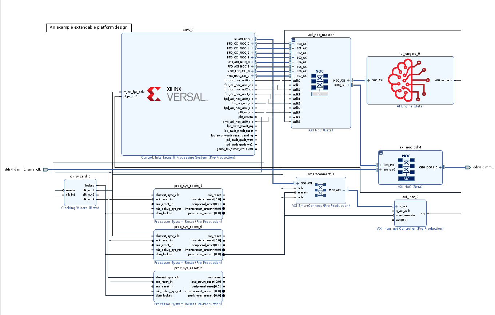

Versal Custom Platform Creation Tutorial |
Step 0: Create a Base Bootable Design for VCK190¶
The purpose of step 0 is to provide a good baseline for platform creation.
There are various ways to create a starting point for Versal design. In this tutorial, we’ll configure the CIPS and NOC block with Vivado presets. We’ll test the PDI (Program Device Image), generate a Fixed XSA (not expandable, only for embedded software development) and use it to create a PetaLinux project to boot the board.
We’ll discuss what needs to be done for a custom board which may not have any preset configurations as well.
By doing these initial bring up and testing steps, it would be easier to isolate problems if the following platform creation steps generates any errors.
VCK190 ES1 Setup: Enable Versal ES Devices¶
Note: If you’re using production VCK190 board, please skip this step.
Edit your <Vivado_Installation_Path>/scripts/Vivado_init.tcl and <Vivado_Installation_Path>/scripts/hls_init.tcl to add the following line:
enable_beta_device xcvc*
VCK190 ES1 Setup: Download VCK190 ES1 board file¶
Note: If you’re using production VCK190 board, please skip this step.
Launch Vivado
Run
source <Vitis_Install_Directory>/settings64.shto setup Vivado running environmentRun Vivado by typing
vivadoin the console.
Download VCK190 ES1 board file
Click Tools -> XHUB Store
Click OK to agree with the information.
Go to Board tab
Expand Evaluation Boards
Select Versal VCK190 ES1 Evaluation Platform
Click Install button
Click Close to close the window
Create Versal Extensible Embedded Platform Example Design¶
Launch Vivado if you haven’t
Run
source <Vitis_Install_Directory>/settings64.shto setup Vivado running environmentRun Vivado by typing
vivadoin the console.
Create an example project
Click File -> Project -> Open Example
Click Next in Create an Example Project window
Click Install/Update Example Designs button on the right upper corner
Click OK to agree to download open source examples from web
Select Platform -> Extensible Embedded Platform and click the download button on the tool bar
Click Close after installation complete.

Select Extensible Embedded Platform in Select Project Template window
Input project name and project location. Keep Create project subdirectory checked. Click Next.
Select target board in Default Part window. In this example, we use Versal VCK190 ES1 Evaluation Platform. Click Next.
Select whether to enable LPDDR4 configurations in additional to DDR4. In this example, uncheck this option and click Next.
Review the new project summary and click Finish.
After a while, you will see the design example has been generated.
The generated design instantiated AI Engine, enabled DDR4 controller and connected them to CIPS. It also provides one interrupt controller, three clocks and the associated synchronous reset signals.

Note: At this stage, the Vivado block automation has added a Control, Interface & Processing System (shorten with CIPS in the future) block, AXI NOC block, AI Engine, and all supporting logic blocks to the diagram, and applied all board presets for the VCK190. Since it’s a validated design, you can go to step1:Hardware Settings for Vitis Platform to review or update platform settings and skip the validation below.
For a custom board, platform developers need to configure CIPS and NOC for processor settings and DDR settings. Please complete the following testings before going to next steop.
Custom Board Additional Steps¶
Custom Board Considerations¶
When designing platform for a custom board, user needs to setup these parameters by themselves.
On Vivado project side, please
Create a design based on your silicon model rather than board type. You can start from scratch, or update device after creating a design fromm Versal Extensible Platform Example.
Make sure clock input parameters match hardware setup.
Configure PS Peripherals: UART, SD Card, QSPI, etc.
Write pinout location in XDC file, including clock, reset, DDR, etc.
For PetaLinux design, please
Use default MACHINE_NAME
Update device tree in system_user.dtsi for your custom peripherals on the board, like Ethernet, EEPROM, etc.
(Optional) Go through Implementation and Device Image Generation¶
If the custom platform is created from scratch, it’s recommended to run through implementation and device image generation to find errors in early stage. It’s not required for platform creation, but it can reduce issues you find in the last platform validation stage.
To run this step, please make sure This project is a Vitis Platform project is NOT selected during platform creation.
Show Detailed Steps
Validate the Block Design
Click Validate Design (F6) button in block diagram toolbar.
Create HDL Wrapper
In Sources tab, right click system.bd and select Create HDL Wrapper. In the pop-up window, select Let Vivado Manage.
Generate Device Image
Click Generate Device Image in Flow Navigator
Click Yes if it pops up a meesage to say No Implementation Results Available.

Click OK for default options for Launch Runs dialouge.
It takes a while to generate block diagram and run through implementation.
PDI is generated in
vck190_custom_platform.runs/impl_1/Export fixed XSA for PetaLinux project Creation
a) Click Menu File -> Export -> Hardware, click Next
b) Select Output to Include Device Image. Click Next.
c) Set output XSA file name and directory. Click Next.
d) Click Finish
(Optional) Validate PDI on Hardware¶
If the custom platform is created from scratch, it’s recommended to test the device image (PDI) on hardware to make sure the device initialization configuration is set correctly. This is not a step required for platform creation, but it can reduce issues you find in the last platform validation stage.
To run this step, please make sure This project is a Vitis Platform project is NOT selected during platform creation.
Show Detailed Steps
Connect hardware server in XSCT
# If JTAG cable is connected locally connect # If JTAG cable is connected on another server, launch hw_server on that server then connect to that remote hardware server connect -url TCP:<SERVER NAME or IP>:3121
Download PDI in XSCT
device program <PDI file>
PDI program should download without errors. If any error occurs in XSCT console, please check block design settings.
Here’s the sample prints on UART console of VCK190 board
Show Log
[8.716546]****************************************
[10.387178]Xilinx Versal Platform Loader and Manager
[15.181959]Release 2020.2 Nov 30 2020 - 07:20:11
[19.889662]Platform Version: v1.0 PMC: v1.0, PS: v1.0
[24.684093]BOOTMODE: 0, MULTIBOOT: 0x0
[28.172159]****************************************
[32.817343] 28.506881 ms for PrtnNum: 1, Size: 2224 Bytes
[37.939565]-------Loading Prtn No: 0x2
[41.975581] 0.531603 ms for PrtnNum: 2, Size: 48 Bytes
[46.307975]-------Loading Prtn No: 0x3
[153.848428] 104.031565 ms for PrtnNum: 3, Size: 57168 Bytes
[156.392071]-------Loading Prtn No: 0x4
[159.994956] 0.012506 ms for PrtnNum: 4, Size: 2512 Bytes
[165.110546]-------Loading Prtn No: 0x5
[168.715028] 0.014362 ms for PrtnNum: 5, Size: 3424 Bytes
[173.831756]-------Loading Prtn No: 0x6
[177.430206] 0.007693 ms for PrtnNum: 6, Size: 80 Bytes
[182.427400]+++++++Loading Image No: 0x2, Name: pl_cfi, Id: 0x18700000
[188.652918]-------Loading Prtn No: 0x7
[1564.072421] 1371.823162 ms for PrtnNum: 7, Size: 707472 Bytes
[1566.876806]-------Loading Prtn No: 0x8
[1956.351062] 385.792100 ms for PrtnNum: 8, Size: 365712 Bytes
[1959.102465]+++++++Loading Image No: 0x3, Name: fpd, Id: 0x0420C003
[1965.172668]-------Loading Prtn No: 0x9
[1969.287834] 0.436437 ms for PrtnNum: 9, Size: 992 Bytes
[1974.032078]***********Boot PDI Load: Done*************
[1979.057962]55080.597596 ms: ROM Time
[1982.528018]Total PLM Boot Time
If the PDI can’t load successfully, please check the CIPS configruation.
(Optional) Create PetaLinux Project¶
If the custom platform is created from scratch, it’s recommended to test building the PetaLinux image and run on hardware before turning this project into a platform project. This is not a step required for platform creation, but it can reduce issues you find in the step 2 - software preparation.
To run this step, please make sure This project is a Vitis Platform project is NOT selected during platform creation.
Show Detailed Steps
For a quick demonstration in this step, we’ll use VCK190 pre-built device tree. It helps to setup peripheral properties, such as Ethernet MAC phy address, etc. These settings are specific to each board. It needs BSP engineers to develop during board bring up phase for custom boards.
Create PetaLinux Project with XSA
petalinux-create -t project --template versal --force -n petalinux cd petalinux petalinux-config --get-hw-description=<path to xsa directory> --silentconfig
The created PetaLinux project name is petalinux. Please feel free to change the PetaLinux project name with petalinux-create -n option.
The XSA used for PetaLinux needs to be a post implementation XSA.
Apply VCK190 device tree
Run
petalinux-configGo to DTG Settings
Enter versal-vck190-reva-x-ebm-02-reva for MACHINE_NAME option (CONFIG_SUBSYSTEM_MACHINE_NAME)
Note: This preset device setting will add ethernet PHY info to device tree. The device tree source code will be applied to the PetaLinux project.
Build PetaLinux Image
petalinux-build petalinux-package --boot --u-boot
Output BOOT.BIN, boot.scr and image.ub are located in images/linux directory.
Validate PetaLinux image on Board
Copy BOOT.BIN, image.ub and boot.scr from build/petalinux/images/linux directory to SD card (fat32 partition).
Insert SD card to VCK190, set boot mode to SD boot (0001) and boot the board.
Make sure Linux boot successfully. Login with username: root, password: root
Show Boot Log
root@petalinux:~# [391.115631]****************************************
[392.964450]Xilinx Versal Platform Loader and Manager
[397.854212]Release 2020.2 Nov 30 2020 - 08:35:24
[402.657115]Platform Version: v1.0 PMC: v1.0, PS: v1.0
[407.546118]BOOTMODE: 14, MULTIBOOT: 0xF0000000
[411.825475]****************************************
[416.562993] 27.536159 ms for PrtnNum: 1, Size: 2224 Bytes
[421.778446]-------Loading Prtn No: 0x2
[425.913643] 0.539328 ms for PrtnNum: 2, Size: 48 Bytes
[430.334103]-------Loading Prtn No: 0x3
[460.345490] 26.411068 ms for PrtnNum: 3, Size: 55792 Bytes
[462.806209]-------Loading Prtn No: 0x4
[469.349675] 2.942065 ms for PrtnNum: 4, Size: 6032 Bytes
[471.634443]-------Loading Prtn No: 0x5
[475.247578] 0.018731 ms for PrtnNum: 5, Size: 80 Bytes
PSM Firmware version: 2020.2 [Build: Nov 30 2020 08:35:39 ]
[485.617643]+++++++Loading Image No: 0x2, Name: pl_cfi, Id: 0x18700000
[491.879575]-------Loading Prtn No: 0x6
[12215.749846] 11720.267596 ms for PrtnNum: 6, Size: 707472 Bytes
[12218.734381]-------Loading Prtn No: 0x7
[12409.592215] 187.084284 ms for PrtnNum: 7, Size: 365712 Bytes
[12412.438018]+++++++Loading Image No: 0x3, Name: fpd, Id: 0x0420C003
[12418.595431]-------Loading Prtn No: 0x8
[12425.245950] 2.878087 ms for PrtnNum: 8, Size: 992 Bytes
[12427.832593]+++++++Loading Image No: 0x4, Name: apu_subsyste, Id: 0x1C000000
[12434.597334]-------Loading Prtn No: 0x9
[12451.208925] 12.838115 ms for PrtnNum: 9, Size: 24752 Bytes
[12453.843937]-------Loading Prtn No: 0xA
[12483.552243] 25.934581 ms for PrtnNum: 10, Size: 59360 Bytes
[12486.274409]-------Loading Prtn No: 0xB
[12875.033006] 384.984465 ms for PrtnNum: 11, Size: 883968 Bytes
N[12877.994431]***** ** **Bont PDr Load:lDone***A****** **
[1i88a.177003]4t0.8 5415 ms: ROMOTime
[12886.560593]cotal P M BootOTime
BL31: Non secure code at 0x8000000
NOTICE: BL31: v2.2(debug):xilinx_rebase_v2.2_2020.1-10-ge6eea88b1
NOTICE: BL31: Built : 08:34:09, Nov 30 2020
INFO: GICv3 with legacy support detected. ARM GICv3 driver initialized in EL3
INFO: BL31: Initializing runtime services
WARNING: BL31: cortex_a72: CPU workaround for 859971 was missing!
INFO: BL31: cortex_a72: CPU workaround for cve_2017_5715 was applied
INFO: BL31: cortex_a72: CPU workaround for cve_2018_3639 was applied
INFO: BL31: Preparing for EL3 exit to normal world
INFO: Entry point address = 0x8000000
INFO: SPSR = 0x3c9
U-Boot 2020.01 (Nov 30 2020 - 08:35:27 +0000)
Model: Xilinx Versal vck190 Eval board revA (EMMC)
DRAM: 2 GiB
EL Level: EL2
MMC: sdhci@f1040000: 1, sdhci@f1050000: 0
In: serial@ff000000
Out: serial@ff000000
Err: serial@ff000000
Bootmode: LVL_SHFT_SD_MODE1
Net:
ZYNQ GEM: ff0c0000, mdio bus ff0c0000, phyaddr 1, interface rgmii-id
Warning: ethernet@ff0c0000 (eth0) using random MAC address - d6:20:82:36:90:32
eth0: ethernet@ff0c0000
ZYNQ GEM: ff0d0000, mdio bus ff0c0000, phyaddr 2, interface rgmii-id
Warning: ethernet@ff0d0000 (eth1) using random MAC address - 2a:64:10:c2:a6:be
, eth1: ethernet@ff0d0000
Hit any key to stop autoboot: 0
switch to partitions #0, OK
mmc0 is current device
Scanning mmc 0:1...
Found U-Boot script /boot.scr
2007 bytes read in 17 ms (115.2 KiB/s)
## Executing script at 20000000
17065984 bytes read in 1372 ms (11.9 MiB/s)
## Loading kernel from FIT Image at 10000000 ...
Using 'conf@system-top.dtb' configuration
Trying 'kernel@1' kernel subimage
Description: Linux kernel
Type: Kernel Image
Compression: gzip compressed
Data Start: 0x100000f8
Data Size: 8341982 Bytes = 8 MiB
Architecture: AArch64
OS: Linux
Load Address: 0x00080000
Entry Point: 0x00080000
Hash algo: sha256
Hash value: 2f80978de5abed593d2caad4b8322d21400424d2510173d49fa04f0d78e8b83f
Verifying Hash Integrity ... sha256+ OK
## Loading ramdisk from FIT Image at 10000000 ...
Using 'conf@system-top.dtb' configuration
Trying 'ramdisk@1' ramdisk subimage
Description: petalinux-image-minimal
Type: RAMDisk Image
Compression: uncompressed
Data Start: 0x107fad60
Data Size: 8697128 Bytes = 8.3 MiB
Architecture: AArch64
OS: Linux
Load Address: unavailable
Entry Point: unavailable
Hash algo: sha256
Hash value: 89c3603e8057b56af941cb225c0859d3e57fe2d6e04f0856a4dce74c41855e2e
Verifying Hash Integrity ... sha256+ OK
## Loading fdt from FIT Image at 10000000 ...
Using 'conf@system-top.dtb' configuration
Trying 'fdt@system-top.dtb' fdt subimage
Description: Flattened Device Tree blob
Type: Flat Device Tree
Compression: uncompressed
Data Start: 0x107f4be8
Data Size: 24741 Bytes = 24.2 KiB
Architecture: AArch64
Hash algo: sha256
Hash value: e3695fb8926b53c44738ceb4be473cef2bd53d6aaa49fd9c695af71d5ca3a80a
Verifying Hash Integrity ... sha256+ OK
Booting using the fdt blob at 0x107f4be8
Uncompressing Kernel Image
Loading Ramdisk to 787b4000, end 78fff528 ... OK
Loading Device Tree to 000000000fff6000, end 000000000ffff0a4 ... OK
Starting kernel ...
(skipping very long Linux boot log)
[ 6.149369] Run /init as init process
INIT: version 2.88 booting
Starting udev
[ 6.229790] udevd[264]: starting version 3.2.8
[ 6.234535] random: udevd: uninitialized urandom read (16 bytes read)
[ 6.241009] random: udevd: uninitialized urandom read (16 bytes read)
[ 6.247486] random: udevd: uninitialized urandom read (16 bytes read)
[ 6.257326] udevd[265]: starting eudev-3.2.8
[ 6.615105] random: fast init done
[ 6.655502] EXT4-fs (mmcblk1p2): recovery complete
[ 6.659634] FAT-fs (mmcblk1p1): Volume was not properly unmounted. Some data may be corrupt. Please run fsck.
[ 6.660306] EXT4-fs (mmcblk1p2): mounted filesystem with ordered data mode. Opts: (null)
Configuring packages on first boot....
(This may take several minutes. Please do not power off the machine.)
Running postinst /etc/rpm-postinsts/100-sysvinit-inittab...
update-rc.d: /etc/init.d/run-postinsts exists during rc.d purge (continuing)
INIT: Entering runlevel: 5
Configuring network interfaces... [ 6.965895] pps pps0: new PPS source ptp0
[ 6.969920] macb ff0c0000.ethernet: gem-ptp-timer ptp clock registered.
udhcpc: started, v1.31.0
udhcpc: sending discover
udhcpc: sending discover
udhcpc: sending discover
udhcpc: no lease, forking to background
done.
Starting haveged: haveged: listening socket at 3
haveged: haveged starting up
Starting Dropbear SSH server: Generating 2048 bit rsa key, this may take a while...
haveged: haveged: ver: 1.9.5; arch: generic; vend: ; build: (gcc 9.2.0 CTV); collect: 128K
haveged: haveged: cpu: (VC); data: 16K (D); inst: 16K (D); idx: 11/40; sz: 15456/64452
haveged: haveged: tot tests(BA8): A:1/1 B:1/1 continuous tests(B): last entropy estimate 7.9996
haveged: haveged: fills: 0, ge[ 16.670222] random: crng init done
nerated: 0
[ 16.675530] random: 7 urandom warning(s) missed due to ratelimiting
Public key portion is:
ssh-rsa AAAAB3NzaC1yc2EAAAADAQABAAABAQClK2Vcoh4YaCLp+s+owIWrtsm5rSzDMAd28vfmHU6grRmr+MQDpbZGelx8FW+7eOffSAbbfiVjrLNuiIP77neX3bfKir8Am6c4YTQCLUc06Mgao52pL0w2Vu+oa/DikBfR9iDkYBpQeO66eEnS3VXH8FwParDcwG475juQ06WO0PgbQh2PghNkW13yJF8vfk/hS9ZXn0MNbn96x+MVe6b70HZFmOllriJeEQj3eVgKKBaZZAYwEW24ynpCM0bWnFSzyohc3ZYTqRnOqXe9bie/Pr18vZs7kqkVUSKhuxstAGG/oRJAM46ODQNwLT8HzMSGnmXsN3pnW8XwFlMNMHHp root@petalinux
Fingerprint: sha1!! 14:87:a7:46:70:bf:0e:a7:cb:75:fd:80:b9:79:e4:ce:7a:1b:25:f7
dropbear.
Starting internet superserver: inetd.
Starting syslogd/klogd: done
Starting tcf-agent: OK
PetaLinux 2020.2 petalinux /dev/ttyAMA0
petalinux login:
Fast Track¶
Scripts are provided to re-create projects and generate outputs in each step. To use these scripts, please run the following steps.
Run build
# cd to the step directory, e.g. cd step0_bootable_design make all
To clean the generated files, please run
make clean
This script downloads the VCK190 ES1 board support and the Versal Extensible Design example to local repository and creates the example design, generate block diagram and export XSA.
A top level all in one build script is also provided. To build everything (step 0 to step 3) with one command, please go to ref_files directory and run
make all
To clean all the generated files, please run
make clean
Now we have a base bootable design. Next we’ll go to step 1 to update the Vivado design for hardware platform requirements.
References¶
https://github.com/Xilinx/XilinxBoardStore/wiki/Accessing-the-Board-Store-Repository
Copyright© 2020 Xilinx